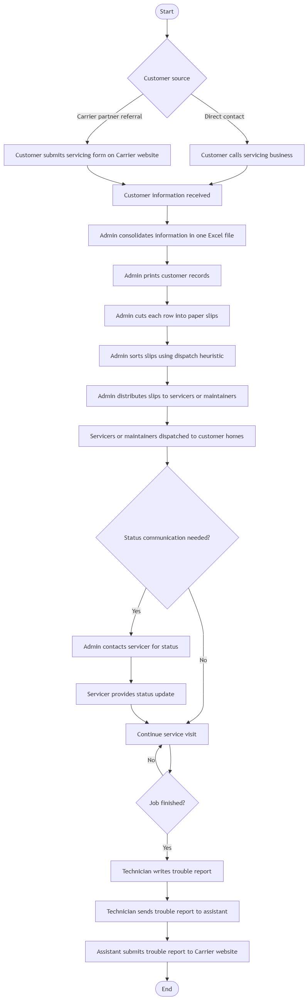
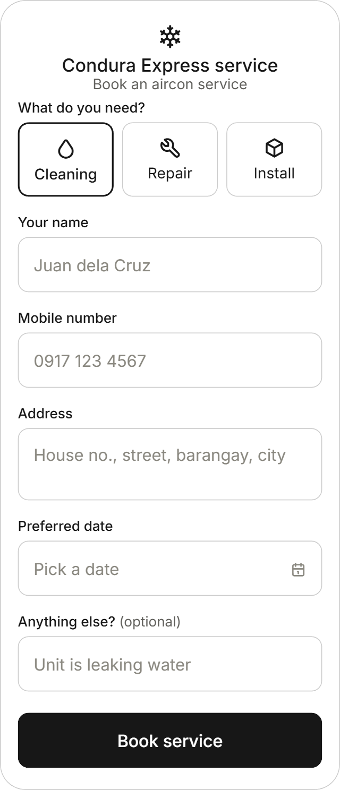
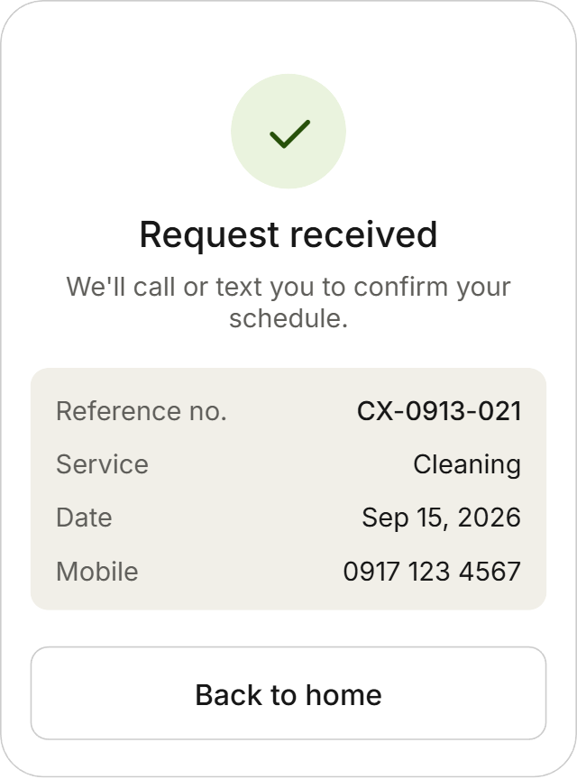
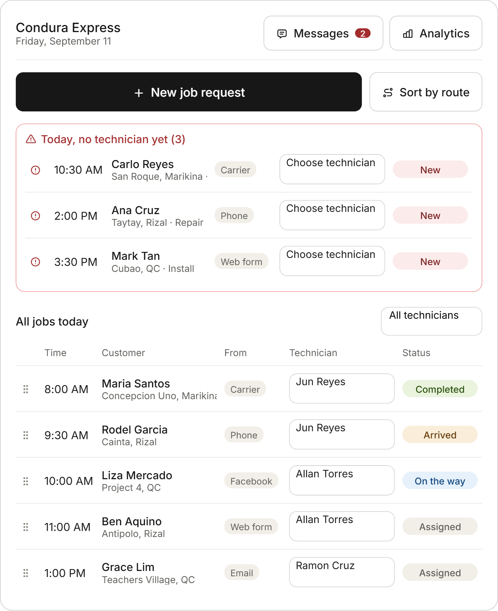
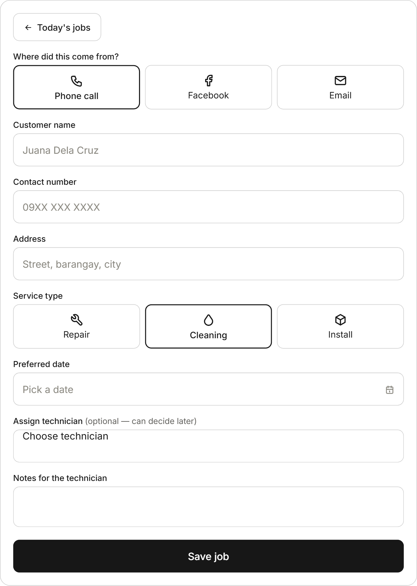
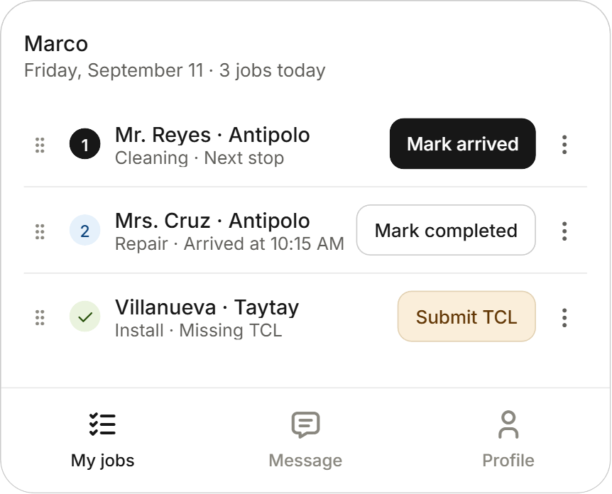
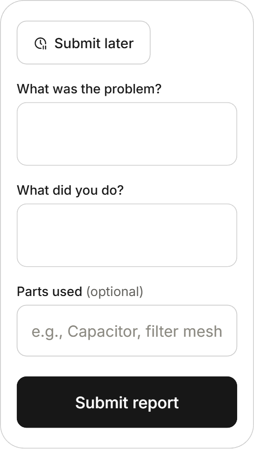
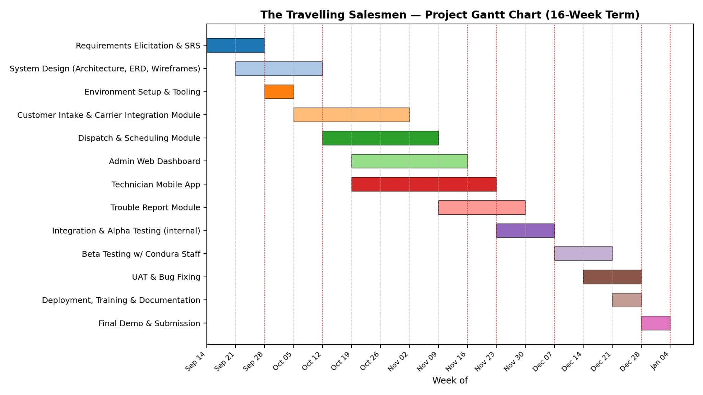

I. Customer Statement of Requirements
Introduction and Background
Background and Motivation
Condura Express Service QC Inc. has been repairing, cleaning, and installing air conditioning units around Quezon City, Marikina, and the entirety of Rizal since 1983. Its owner runs the business' day-to-day operations with the help of two (2) admin assistants and twelve to fourteen (12-14) field technicians.
A large share of their bookings don't come from them directly-rather, they come through Carrier, the aircon brand Condura services as a partner. Customers living within Condura's coverage area that books a service through Carrier's site may be routed to Condura as a new job to carry out. There's even talk about a "Carrier app" for the business to manage these kinds of bookings. It's a steady pipeline, but not one that fits Condura.
A portion of their bookings come to them directly, either by means of telephone calls, emails, or Facebook Messenger inquiries. The admin assistant is the one responsible for consolidating these separate lead channels into a master excel file and, ultimately, a single dispatch queue. Human-dependent centralization in an essentially decentralized system is a loss for everyone. Expecting a team member to do the menial task of reconciling incompatible platforms is a waste of human potential and unsustainable drain on human energy-one that inevitably breeds fatigue and opens the door to oversight, no matter how diligent they are.
During most months, this is bearable. Peak months, however, tell a different story. Summer (March through May) are Condura's busiest months and exposes how little slack the current system has. These inefficiencies are not mere operational friction on paper; they have concrete consequences for the business, directly translating to the loss of a potential customer to a faster competitor.
This operational reality highlights the genuine necessity of a dedicated software solution. Digitization here is not a matter of tech vanity or following the cliche that "every business needs a business app." Rather, it's a critical operational tool that will allow them to relieve human effort from manual intake, safeguards customer leads, and survive under the load of their own peak season.
The Problem
Here's what a single job looks like on a daily basis, from the moment a customer wants service to the moment the paperwork is closed out.
The admin assistant checks what came through Carrier's website, picks up the ringing phone, looks at emails, or reads Facebook messages. Phone inquiries require jotting down the details on a piece of paper and typing them into a master Excel sheet. Digital inquiries aren't any better, the assistant must still manually copy them from the source and re-enter them in the same spreadsheet.
Once all of the day's jobs are sitting in the spreadsheet, the admin assistant prints this and cuts them into stubs. Someone with years on the job-not some rule written in a rulebook-decides who goes where. This is not a criticism of Condura's way of doing things; it's a description of how much their scheduling currently exists only in a couple of people's heads.
The stubs are then handed over to their respective technicians. Once these technicians head out, the main office loses live visibility: cell signals in parts of Condura's coverage area are spotty and unreliable. Admin staff end up calling technicians repeatedly throughout the day just to find out where they are and whether they've arrived.
When the job is done, the technician writes up a document called 'trouble call report' which details what unfolded during the job. The trouble report is then logged into their current system and, if it was booked via Carrier, will also be typed up on the partner company's site.
When you add it up, a single job passes through Condura's hands as data at least four (4) times and each time is someone retyping or repackaging data that has already been recorded. That's where paper waste comes from and is exactly where errors originate-a transposed phone number, a mis-heard address, a lost stub, accidental corruption of spreadsheet entries. The fault for these problems does not lie within the workers, but within the decentralized nature of the system in place.
None of this scales gracefully: the busier the business gets, the more calls, the more jotted down notes, the more spreadsheet rows, the more paper stubs, and the more the entire pipeline becomes prone to error.
The Current Workflow
The flowchart diagram below is what the team derived and the client approved from the meeting in regards to how they do their business today.

Tools and Existing Solutions
Condura's situation isn't unique. As a matter of fact, this combination of problems-rudimentary excel-based record systems, paper scheduling, no live technician visibility-is common enough in home-service businesses that an entire category of software already exists to address it. They are usually called Field Service Management (FSM) software and none of them will be adapted wholesale for this project. However, each will be useful as a reference point for what a mature version of this system looks like.
- Zuper - an Al-powered FSM platform built for HVAC dispatching businesses, covering scheduling, technician dispatch, analytics, and even optimized route handling. (https://www.zuper.co/hvac-dispatching-software)
- Housecall pro - also has a software solution dedicated for HVAC dispatching businesses, with features like scheduling, routing techs by location, estimating and quoting, as well as invoicing, and a Customer Relation Management (CRM) component. They also have a mobile app for technicians. (https://www.housecallpro.com/industries/hvac-software/)
Why not just them?
While the software solutions mentioned above and others in the same category seem promising to solve Condura's issues, they all have their caveats with respect to our clients. Aside from the high price point they set for subscriptions or less than satisfactory free-tier limits, they contain substantially more features than the client prefers-feature bloat from their perspective. These apps also don't take into consideration their workflow as well as their need for automatic consolidation from multiple lead channels.
Requirements
This section will enumerate and discuss requirements-what the user should be able to do and what the software does on its own.
Admin Assistant
- Log a new job request (either from (1) phone calls, (2) emails, and (3) facebook inquiries) directly into the system, skipping the paper-excel entry workflow altogether.
- See a single dashboard of today's jobs with urgent or unassigned jobs called out early.
- Look up customer details without digging through a spreadsheet.
- Assign jobs to technicians and reassign later if need be.
- See a job's status and details.
- Message technicians directly through the system.
- View a simple monthly analytics (to be specified by the client) with option to select various timeframes.
- Order jobs by route either manually or by the software's recommended heurestic.
- (automatic) Log booking from Carrier's website directly to the system.
- (automatic) System flags same day jobs that are un-assigned to the top of the list
Technician
- View today's assigned jobs and details about it.
- See jobs ordered by route.
- Message the admin from the app directly for questions or delays.
- Get pinged for job changes.
- Mark the job's status as arrived, completed, or something else with one tap or a selection respectively.
- Submit a trouble call report directly through their phones.
Customer
- Book a service directly without waiting on a phone call.
- Provide the jobs basic details through a short form.
- Get confirmation that their application went through.
Features such as invoicing, quotation, and technician-to-technician messaging are out of scope. Implementation of map features is still under consideration.
Preliminary UI Design
User Navigation
A customer lands on a short request form, inputs their details, picks what they need, and submits it-no account or login required.
An admin assistant logs in to the dashboard showing today's jobs. From there they can:
- Click the new job request button to open an entry form for a phone, Facebook, or email booking, filling it in, saving the job, and automatically redirecting back to the dashboard, now showing the new job.
- Click an existing job to see its details or click edit and manipulate it. While in there, they can also click the name of the technician assigned to send a message.
- Rearrange the jobs.
- Click the message icon and select which technician to message.
- Assign jobs by a drop down selection.
- Click the Analytics button to show monthly/any timeframe analytics.
A technician logs in to their own personal dashboard showing today's jobs and works down their route in order. For each stop, they mark their status. Indicating a finished job redirects them to the Submit Trouble Report screen which they can either fill up now and submit or defer to later. To access the Submit Trouble Report that was deferred, they simply need to tap the finished job and click the Submit Trouble Report button.
Screen Mockups






II. Plan of Work
Estimate cost and resources
a. People and Time
The team consists of three student developers who will work part-time alongside coursework for the entire duration of the term. No monetary compensation is budgeted given that this is a course-based engagement. We estimate person-hours instead as the primary "cost."
| Team Member | Role | Primary Responsibility | Est. Weekly Commitment |
|---|---|---|---|
| Amante, lan Emmanuel B. | Full-stack Developer / Integrations Lead | Customer intake & Carrier partner integration | 15-18 hrs/week |
| Deananeas, Art Gandalf | Full-stack Developer / Backend Lead | Dispatch & scheduling engine, admin dashboard | 15-18 hrs/week |
| Zabala, Rohan Miguel | Full-stack Developer / Mobile Lead | Technician mobile app & trouble-report module | 15-18 hrs/week |
b. Estimation Technique 1 - Process-based Estimation
We distributed total estimated effort across the five generic software process framework activities (Communication, Planning, Modeling, Construction, Deployment), following the typical percentage splits used for small, well-understood information-management projects.
| SE Framework Activity | % of Effort | Est. Person-Hours | Est. Duration |
|---|---|---|---|
| Communication | 10% | ~59 hrs | Weeks 1-2 |
| Planning | 8% | ~47 hrs | Weeks 1-2 |
| Modeling | 17% | ~100 hrs | Weeks 2-4 |
| Construction | 50% | ~294 hrs | Weeks 4-12 |
| Deployment | 15% | ~88 hrs | Weeks 13-16 |
| Total | 100% | ~588 hrs | 16 weeks |
c. Estimation Technique 2 - Problem-based (FP) Estimation
We derived an unadjusted function point count from the system's anticipated inputs, outputs, inquiries, and data stores, based on the workflow described in Section I.
| Component Type | Count | Avg. Weight | FP Subtotal |
|---|---|---|---|
| External Inputs | 6 | 4 | 24 |
| External Outputs | 5 | 5 | 25 |
| External Inquiries | 4 | 3 | 12 |
| Internal Logical Files | 3 | 10 | 30 |
| External Interface Files | 7 | 1 | 7 |
| Unadjusted Function Points | 98 |
d. System Resources
The system's minimum resource requirements, informed by Condura's existing office setup and the spotty coverage described in the current workflow are here below:
| Resource | Minimum Requirement |
|---|---|
| Admin display | Color display, minimum resolution 1280 x 720; modern browser (Chrome, Edge, or Firefox latest 2 versions) |
| Admin/office hardware | Windows 10+ or dual-core CPU equivalent, 4 GB RAM, |
| Technician mobile devices | Android 8.0+ (priority platform, given majority local market share); minimum 2 GB RAM, GPS-enabled |
| Application server | Cloud-hosted, min. 1 vCPU/2 GB RAM to start, horizontally scalable for peak season (March-May) |
| Database storage | Min. 5 GB initial allocation for customer, job, and technician records, with room to scale with job history |
| Network bandwidth | Min. 256 Kbps sustained for admin dashboard; mobile app must support offline queuing and sync given the coverage area's spotty cell signal |
| Third-party dependency | Carrier partner API/webhook access (credentials and documentation to be requested from the client) |
Schedules and Milestones
The Gantt chart below lays out major work milestones across the 16-week duration, with markers corresponding to the table here:

| # | Milestone | Deliverable | Target Date |
|---|---|---|---|
| M1 | SRS Approved | Signed-off Customer Statement of Requirements | Sep 28, 2026 |
| M2 | System Design Complete | Architecture diagram, ERD, UI wireframes | Oct 12, 2026 |
| M3 | Admin Dashboard MVP | Working intake + dispatch screens (internal demo) | Nov 16, 2026 |
| M4 | Technician Mobile App MVP | Job list, status update, offline sync | Nov 23, 2026 |
| M5 | Alpha Testing Complete | Internal QA pass on all modules | Dec 7, 2026 |
| M6 | UAT Sign-off | Condura staff acceptance of pilot build | Dec 28, 2026 |
| M7 | Final Demo & Submission | Deployed system, documentation, training | Jan 4, 2027 |
Project metrics
We will track the following metrics throughout development to measure project status and catch delays or quality problems early. Each was chosen to correspond either to a specific risk in our Risk Table or to the core business problem described in Section I.
| Metric | Definition | Why We Chose It |
|---|---|---|
| Schedule variance | (Actual milestone date planned milestone date), tracked per milestone in the table above | Two risks in our risk table ("Development tasks take longer than expected," "Team underestimates complexity") are both HIGH probability |
| Requirements volatility | Number of changed/added requirements total baseline requirements, measured after each client review | Directly tracks the "Client company will change requirements" risk (MODERATE probability) identified in our risk table |
| Defect density | Defects found in testing estimated KLOC or function points, tracked per module | Standard construction-phase quality indicator; helps us decide which module needs another testing pass before UAT |
| Data re-entry count | Number of times a single job's data is manually retyped from intake to close-out | The narrative documents the same job being re-entered at least 4 times today is a main pain point. Our target is 1 |
| Task completion time (usability) | Average time for a technician to log a status update or submit a trouble report in the app, measured during UAT | Addresses the HIGH-probability risk that "client staff may be inexperienced with technology" |
Effort breakdown
Responsibilities are divided by module, with each member acting as primary owner of the components most closely tied to their assigned part of the workflow. All members share testing and integration duties so no single point of failure exists if a member becomes unavailable.
| Team Member | Module(s) Owned | Representative Classes / Components |
|---|---|---|
| Amante, lan Emmanuel B. | Customer Intake Module; Carrier Partner Integration | LeadIntakeController, CarrierWebhookAdapter, Customer Record, ContactChannelParser |
| Deananeas, Art Gandalf | Dispatch & Scheduling Engine; Admin Web Dashboard | DispatchScheduler, JobAssignmentEngine, TechnicianAvailabilityService, Admin DashboardView |
| Zabala, Rohan Miguel | Technician Mobile App; Trouble Report Module | TechnicianJobView, Status UpdateSync, Offline Queue Manager, TroubleReportForm, ReportExportService |
| All members | Shared: QA/testing, code review, deployment, client demos | Rotating peer code review on every pull request; joint responsibility for integration testing across modules |
III. Project Risks
Risk Table
| Risks | Category | Probability | Impact | RMMM |
|---|---|---|---|---|
| Client Company Drops the Project | BU | VERY LOW | 1 | Have both parties (the dev team and the client) agree on a contract to protect both parties. Additionally, periodically reaffirm the client's commitment to the project and the partnership. |
| Client Company's Employees resist the software | SC | LOW | 2 | Coordinate with the owner of the company to reconfirm readiness of the employees to migrate to a new software for their workflows. Include employee opinions for feedback during development cycles |
| Client Company will change requirements | SC | MODERATE | 2 | Clearly establish and document initial scope. Be open to changes but review each change to how it would affect the rest of the project's complexity and/or schedule and decide to accept, reject, or accept with conditions/revisions accordingly |
| Client Company staff may be inexperienced with technology | PR | HIGH | 3 | Design the software with intuitiveness as a high priority and minimize complications for users. Collect feedback from intended users on the intuintiveness or complicatedness of software |
| Client Company and staff hardware might be weak | DE | HIGH | 2 | Determine current hardware of client company and the minimum requirements for the software to run properly. Design the software to not need a high level of hardware requirement just to run and have/do tests while simulating client hardware |
| Member(s) of the team may be unavailable at certain points | SR | MODERATE | 2 | Set a recurring schedule for the team to necessarily allot time to the project. Intentionally design the schedule to have a certain amount of flexibility to account for unexpected happenings. Always keep both the project repository and the rest of the team up-to-date on current progress to allow quick emergency reassignments for high importance components. |
| Partner company of the client company releases their custom software | BU | LOW | 2 | Maintain regular communication about ongoing developments regarding the alternative software. Design our software solution to specifically occupy a niche unoccupied by the possible alternative software |
| Misunderstanding of client company's requirements | PD | MODERATE | 2 | Confirm client requirements with the client before the first line of code is written. Regularly communicate and ask for feedback to ensure alignment of the project to the vision |
| Requirements are insufficiently defined | PD | MODERATE | 3 | Conduct thorough interviews with the contact person to get a clear idea of the problems that are being encountered. Identify and clarify any unclear requirements with the contact person. Confer with the contact person regarding the proposed and planned features of the project to confirm alignment to the business' problems. |
| Scope of the project becomes too large | PS | HIGH | 2 | Document the absolute minimum features and scope required by the client and have both parties agree on this. Be open but only consider addition/change if the resulting workload estimates remain within schedule (via only minor changes or removing some features in exchange) |
| Development tasks take longer than expected | SR | HIGH | 2 | Intentionally design the schedule to have a certain amount of flexibility to account for unexpected happenings as well as the learning curve of the project. Keep track of current project pace and compare it with the set schedule and adjust schedule accordingly while communicating with the client |
| Client company primary contact point may be unavailable | SC | VERY HIGH | 3 | Establish a secondary communication line with a different client contact point to serve as a backup in case the primary contact is unavailable |
| Company feedback is delayed | SC | MODERATE | 2 | Sense and set in advance meeting times, schedules, and agenda to give both parties ample time to prepare for the meeting but prepare a backup date in case the initial meeting time is not met. |
| Team Underestimates Project Complexity | TE | HIGH | 2 | Break large features in the system into smaller more manageable components to be able to get a better estimate of workload. Readjust estimations when new information comes to light and adjust accodringly |
| Team Members Have Conflicting Schedules | SR | MODERATE | 3 | Establish a project schedule to be followed by the members of the team, making sure the schedule takes into consideration any unexpected happenings academic or otherwise. |
| System Does Not Work Well on Different Mobile Devices/Platforms | TE | MODERATE | 2 | Confirm pc and smartphone platforms being used by the intended users in the company. Design the software to be responsive and work on the platforms of the intended userbase. Include ensuring compatibility in testing with priority going to the most commonly used platforms |
| Poor Internet Connectivity Prevents Technicians from Accessing Jobs | TE | HIGH | 2 | Investigate and include a functionality that would allow technicians to be able to access job information locally or without internet. Communicate with the technicians about the specific experiences (location, length of time, frequency) of occasions where internet connectivity is unavailable |
| The team misunderstands the existing workflow | PR | MODERATE | 2 | Document the current workflow of the client company and confirm accuracy of understanding. Relate features to specific parts of the current workflow to make understanding the relationship of the current workflow and software being created much easier |
- PS - Project Size Risk
- BU - Business Impact Risk
- SC - Stakeholder Characteristics Risk
- ST - Staff size and experience
- PR - Performance risk
- TE - Technology to Be Built
- DE - Development environment
- SR - Schedule risk
- PD - Process definition
- 1 - Catastrophic
- 2 - Critical
- 3 - Marginal
- 4 - Negligible